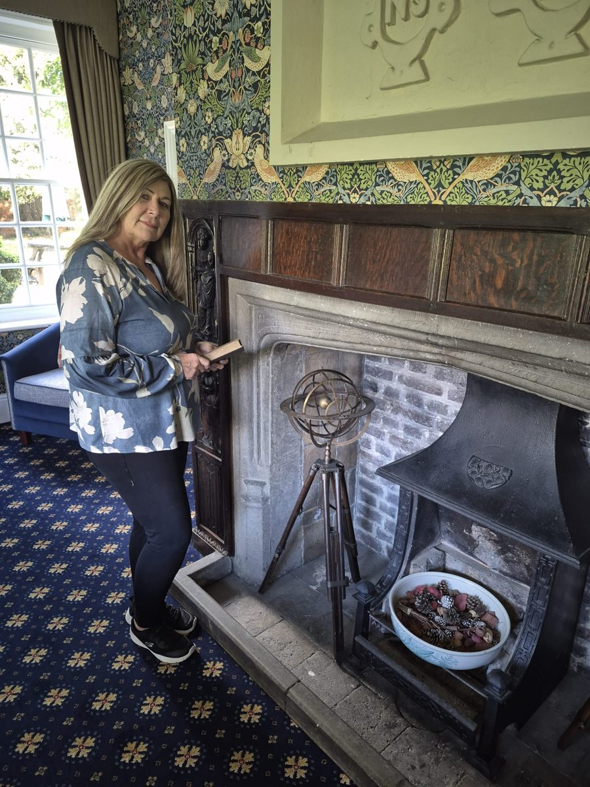

Clare Kiernan · My story

I remember my first day at HMP Chelmsford vividly. The strict security procedures, metal detectors, scrutiny of personal belongings and having my mobile phone locked away were a world away from everyday life. I was handed a bunch of keys, without cell keys, and quickly learned that even the smallest details had their place within the prison regime.
The musty smell of the wings, the uniform grey sweatshirts and trousers worn by prisoners, and the restricted environment made a lasting impression on me. Individual identity seemed to disappear behind prison walls. Although I encouraged prisoners to call me Clare, most addressed me as “Miss” on the wings, only using my name when we met privately.
For three years, five days a week, eight hours a day, I worked alongside men of all ages in this remand prison, including those accused or convicted of serious offences. I encountered a world governed by unwritten rules, where trust had to be earned and understanding the prison culture was essential.
What surprised me most was how much these men taught me.
My personal values, particularly respect, consistency and genuine human connection, became my most valuable tools. I had to demonstrate that I was not simply a “do-gooder”, but someone who could listen without judgement and offer something meaningful within their restricted and unpredictable world.
I encountered first-time prisoners who appeared terrified and overwhelmed, others who carried themselves with confidence, and men who had spent many years in prison. Some were serving life sentences; others were returning to a familiar environment that, despite its restrictions, could offer a sense of belonging or respite from the chaos of life outside.
Living in a cell measuring approximately six by eight feet, sharing a toilet and sink with a stranger, and spending up to 20 hours a day confined with your thoughts demands enormous resilience. For many, those hours brought painful memories, regret and reflection on the circumstances that had led them there.
Alongside my work supporting prisoners to understand the consequences of drug and alcohol misuse, I developed a counselling service. I could sense the despair, loneliness and hopelessness experienced by so many men, and I wanted to offer a safe space where they could begin to make sense of their lives.
Behind the prison labels, I encountered men carrying profound sadness, shame, trauma and loss. In the counselling room, I regularly heard accounts of childhood abuse, prolonged bullying, family tragedies and exposure to extreme violence. Drugs and alcohol had often become a way of numbing emotional pain, betrayal and shame. What may initially have offered relief had gradually become another source of suffering and destruction.
I heard stories of young teenagers being forced into bare-knuckle fights to uphold a family's reputation, with no choice but to fight or be beaten. These experiences offered a powerful insight into how early trauma, fear, expectations and a lack of safety can shape a person's understanding of themselves and the world around them.
Prison introduced me to a wide spectrum of human experience, including mental health difficulties that appeared to have gone unrecognised or untreated. I saw how substance misuse, repeated offending and the need to belong could become intertwined. It challenged me to look beyond behaviour and consider the experiences, unmet needs and emotional pain that might lie beneath it.
Through offering unconditional respect, acceptance and a safe therapeutic space, I witnessed how a different perspective could begin to emerge. When people feel heard rather than judged, there is an opportunity for hope, reflection and change.
I share this experience because my understanding of loss, change, resilience and belonging is not based solely on professional training. It is also rooted in my own life.
At the age of eight, I experienced a major upheaval when I left New Zealand and the familiarity of my country, friends, father and culture. I felt bewildered by a world that had suddenly changed. What helped me through was resilience, connection and, over time, finding meaning and purpose.
Working within the prison walls deepened my understanding of how significant life experiences can influence the paths we take. It also strengthened my belief that people cannot be fully understood by looking only at their present circumstances or behaviour.
Sometimes, in the counselling room, I recognise how people can create their own prison cells, confined by anxiety, fear, shame, painful experiences or a sense of hopelessness. These emotional barriers can affect adults and young people alike, restricting their confidence, relationships and ability to see a way forward.
My experience at HMP Chelmsford reinforced the importance of looking beyond the surface, recognising the person behind the behaviour and understanding the experiences that have shaped them.
This remains central to my work today through Essex Therapy. I believe that when people are met with empathy, respect and genuine understanding, they can begin to make sense of their experiences, reconnect with themselves and discover new possibilities for change.
Because sometimes, before we can move forward, we first need to understand what has kept us feeling trapped.
You don't have to do this alone
We can arrange a 15-minute conversation to answer questions you may have. You’re under no obligation to book; this is simply a first step.